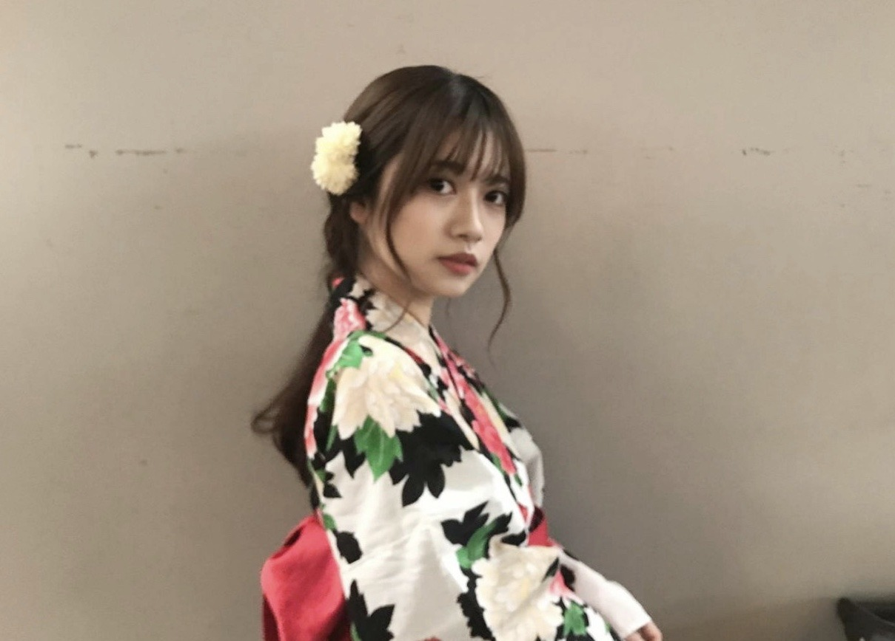

2020/0803Monディズニープラス
ディズニー作品で育った私
ディズニープラスで作品をみてるときは最高の時間です。✨
懐かしい作品も初めましての作品も
ディズニープラスで作品をみてるときは最高の時間です。✨
懐かしい作品も初めましての作品も
ずっと楽しめます。✨
今日は
ブラック・イズ・キングを観ました。
映像が美しくてお洒落で
音楽も最高にカッコいい作品でした。
凄く私の好きな雰囲気が詰まっていました。
こんなお洒落な作品
私もこういうの表現してみたいし
作る側もいつかはやりたいって思いました。
着てみたいお洋服も
行ってみたい撮影場所も
こんなカッコいい曲も歌えたら楽しいだろうなーって
とても、わくわくする時間でした。✨
MVとか作りたいって最近凄く思うんですよね。
ディズニー作品では
沢山の学びがあります。
何歳になっても
どんな環境で生きていても
私に生まれたからには
この世に生まれたからには皆んな
自分らしく生きて欲しいなーって思いながら生きてます。
また、壮大な話をしてしまいましたが、、、！
綺麗なものに感化されるのは良い事ですよね。
沢山色んなものを見てインスピレーションを受けて
自分らしさを何歳になっても作り続けたいです。✨
ディズニープラス登録してる人？
おすすめ作品ありましたら教えてください
それと、スターウォーズ全部は見た事なくて
全作品制覇したいのですが
どの順番で見るのがおすすめですか？
生誕Tシャツ✌️✌️
生誕グッズ
締め切り短く本日までとなってます！！
今年、私はXLサイズで注文しました！
大きめに着るのが好きです
後悔なく
お忘れなく！！
Hakuna Matata ;-)


2020/08/03 20:24
コメント(582)
おはようございますらんぜ(^^)！
昨晩は、おつかれさまでした〜！！
しっかりと、聴いておりましたヨ(^^)♪
一年ぶりくらいだよねえって、思って聴いてました♪
最初、らんぜのお洋服の説明がありましたね(^^)
らじらー公式さんから、らんぜのお写真がながれて来て、見る事ができました！
お話に上がっているときはまだお写真見れてなかったので、どんな感じかな、、ってちょっと想像が難しかったのですが、少しおいてお写真見れて、わあ！とっても可愛いなあ(^^)と、顔がほころびました♪
らんぜはお話では、普段こんな大人っぽいのは、、、って言っていましたけど、お写真で見ると、そんなにそっちに寄ってなくて、ホントに夏を感じさせる可愛らしさを、そういう印象を1番に受けました(^^)柄がとても素敵ですね。私はそういう柄好きです(^^)b
こじまさんのお洋服なんですね〜！らんぜとってもよくお似合いですよ(^^)♪こじまさんのお洋服好調なんですってねぇ、ついこの間記事で読みました。特に同世代の女性に向けてという事ではないのかな、らんぜのような若い人が着てすごく素敵ですからね。いえ、らんぜならどんなものも、オシャレに取り入れてしまいますからね(^^)d
すっごく似合ってますよ！
メールでも、その装いのお写真ありがとう！
SHOWROOMでもらんぜ言ってたけど、メールならではのらんぜのお顔だったね(^^)
1時間、らんぜだけだったからとっても聴きやすかったです。以前とやり方が変わったんですね、ビックリしちゃいました！
まだまだ感想ありますから！
また書きますね(^^)
とまらんぜも、とっぷめも！
盛りだくさんだから、感想追いつかないよ〜^^;
今日もほんっとに暑いですけど、くれぐれも
お水と塩分をお忘れなく、らんぜ。
クラクラホントにきてしまいますよ、、、
私はこの前なりました、、、
今日もらんぜが、ココロおからだお健やかにいれますように。
大好きな気持を送って、応援していますから！
ごきげんよう、らんぜ。
また書きますね(^^)/〜
昨晩は、おつかれさまでした〜！！
しっかりと、聴いておりましたヨ(^^)♪
一年ぶりくらいだよねえって、思って聴いてました♪
最初、らんぜのお洋服の説明がありましたね(^^)
らじらー公式さんから、らんぜのお写真がながれて来て、見る事ができました！
お話に上がっているときはまだお写真見れてなかったので、どんな感じかな、、ってちょっと想像が難しかったのですが、少しおいてお写真見れて、わあ！とっても可愛いなあ(^^)と、顔がほころびました♪
らんぜはお話では、普段こんな大人っぽいのは、、、って言っていましたけど、お写真で見ると、そんなにそっちに寄ってなくて、ホントに夏を感じさせる可愛らしさを、そういう印象を1番に受けました(^^)柄がとても素敵ですね。私はそういう柄好きです(^^)b
こじまさんのお洋服なんですね〜！らんぜとってもよくお似合いですよ(^^)♪こじまさんのお洋服好調なんですってねぇ、ついこの間記事で読みました。特に同世代の女性に向けてという事ではないのかな、らんぜのような若い人が着てすごく素敵ですからね。いえ、らんぜならどんなものも、オシャレに取り入れてしまいますからね(^^)d
すっごく似合ってますよ！
メールでも、その装いのお写真ありがとう！
SHOWROOMでもらんぜ言ってたけど、メールならではのらんぜのお顔だったね(^^)
1時間、らんぜだけだったからとっても聴きやすかったです。以前とやり方が変わったんですね、ビックリしちゃいました！
まだまだ感想ありますから！
また書きますね(^^)
とまらんぜも、とっぷめも！
盛りだくさんだから、感想追いつかないよ〜^^;
今日もほんっとに暑いですけど、くれぐれも
お水と塩分をお忘れなく、らんぜ。
クラクラホントにきてしまいますよ、、、
私はこの前なりました、、、
今日もらんぜが、ココロおからだお健やかにいれますように。
大好きな気持を送って、応援していますから！
ごきげんよう、らんぜ。
また書きますね(^^)/〜
蘭世さん
こんにちは♪
いつもモバメありがとう♪
昨日はらじらーでしたね！
ずっと聴いてましたよー♪
やっぱり蘭世さんの声と喋り方はいやされますねー♪
もっと聴いていたかったです！
大変な日々が続いてるけどこれからも無理せず、蘭世さんらしく頑張ってね♪
こんにちは♪
いつもモバメありがとう♪
昨日はらじらーでしたね！
ずっと聴いてましたよー♪
やっぱり蘭世さんの声と喋り方はいやされますねー♪
もっと聴いていたかったです！
大変な日々が続いてるけどこれからも無理せず、蘭世さんらしく頑張ってね♪
らじらー聴いたよ〜
久しぶりだったけど楽しかったよ♪
ラジオに出てる蘭世も好きだよ〜
ニュースがとまらんぜもチェック済みだよ！
EX大衆も買うね^ ^
久しぶりだったけど楽しかったよ♪
ラジオに出てる蘭世も好きだよ〜
ニュースがとまらんぜもチェック済みだよ！
EX大衆も買うね^ ^
やぁ(｡･ω･)ﾉﾞ最愛なる蘭世
メ―ルありがとう！
今日は飛鳥ちゃんの誕生日なんやなおめでとうやね。
てかうちのおかんも今日誕生日やわ笑
毎回ちゃんと誕生日おめでとうとういう中で良き良きやな。
これからも変わらない関係でいられるようにな
良かったな。
その内容も大事に心に置いておこう
きっとままた後で(｡･ω･)ノ
蘭世ちゃん、こんにちは！昨日のらじらー、聴きました。モバメの写真の通り、夏らしくて、素敵なワンピース姿ですね。ありがとう！らじらーには、一年ぶりくらいの出演。けれども、ラジオから伝わる魅力や可愛らしさは、色褪せない。僕が蘭世ちゃんを好き！！と、思う気持ちも強いのかな。不思議！今日は、飛鳥ちゃんのお誕生日。先程、飛鳥ちゃんのブログに、お祝いコメントを書きました。飛鳥ちゃんのブログに触れるのは、初めてで、読みました。飛鳥ちゃんと蘭世ちゃん、人柄や気質が似ている感覚がありました。美しく気高く、繊細。それは、ほっこりする、笑みが浮く気持ちです。愛しいですね！
メールありがとう☺︎
飛鳥ちゃんお誕生日おめでとうやね！！
乃木坂メンバーの関係性って本当に素敵やなあって思います☺️
いつまでも続くと良いね！
飛鳥ちゃんとのやりとりも気になる〜けど、これは2人の秘密かな？？
私は今大学3回生なので、そろそろ就活のことも考えなければいけません。
今日インターンのこととかしてたんだけど、
やっぱり私の1番やりたいことって雑誌の編集なのかなって
色々調べてる中で思いました。
自分はまだまだだけど純粋にお洒落が好きだし、
キラキラしてる女の子は憧れだし、
そんな雑誌にいつもワクワクをもらってるから次は自分も雑誌作りに携わってみたいなあって。
それに、いつかファッション関係で蘭世ちゃんとお仕事できたらなあって夢もあります！
まだどうなるか分からないけど、夏休みは時間もあるし将来についてじっくり考えたいと思います。
今からダンボでも観ようかな〜
蘭世ちゃん、最近ディズニープラスでなにか観た？☺️
飛鳥ちゃんお誕生日おめでとうやね！！
乃木坂メンバーの関係性って本当に素敵やなあって思います☺️
いつまでも続くと良いね！
飛鳥ちゃんとのやりとりも気になる〜けど、これは2人の秘密かな？？
私は今大学3回生なので、そろそろ就活のことも考えなければいけません。
今日インターンのこととかしてたんだけど、
やっぱり私の1番やりたいことって雑誌の編集なのかなって
色々調べてる中で思いました。
自分はまだまだだけど純粋にお洒落が好きだし、
キラキラしてる女の子は憧れだし、
そんな雑誌にいつもワクワクをもらってるから次は自分も雑誌作りに携わってみたいなあって。
それに、いつかファッション関係で蘭世ちゃんとお仕事できたらなあって夢もあります！
まだどうなるか分からないけど、夏休みは時間もあるし将来についてじっくり考えたいと思います。
今からダンボでも観ようかな〜
蘭世ちゃん、最近ディズニープラスでなにか観た？☺️
モバメありがとうございます。
１期生の皆様本当に素敵な方達ばっかですよね！
そんな１期生の皆様に負けず劣らず蘭世さんも良い先輩してると思いますよ～
まひろさんは乃木坂在籍中からずっと仲良くしていた印象があるので今もその関係が続いている事が勝手にですがとても嬉しく思います！！
自分は何もしていませんが、蘭世さんにそう言って頂けて嬉しいです。でも、そう言われる理由は蘭世さん自身が素敵なのでそれを少しでも見習おうと思い行動しているからだと思いますよ！
らじらーもちろん聞きましたよ～
久しぶりにオリラジのお二人と絡みとても面白かったです！！
藤森さんに対してはっきりと言い返す所が個人的に１番良かったです。
飛鳥さんおめでとうですね！！
１期生と２期生の関係性良いですよね～
飛鳥さんと蘭世さんの２人でのインタビューやグラビアも待ってますね！
ずっと大好きですよ。
これからも応援していきます。
１期生の皆様本当に素敵な方達ばっかですよね！
そんな１期生の皆様に負けず劣らず蘭世さんも良い先輩してると思いますよ～
まひろさんは乃木坂在籍中からずっと仲良くしていた印象があるので今もその関係が続いている事が勝手にですがとても嬉しく思います！！
自分は何もしていませんが、蘭世さんにそう言って頂けて嬉しいです。でも、そう言われる理由は蘭世さん自身が素敵なのでそれを少しでも見習おうと思い行動しているからだと思いますよ！
らじらーもちろん聞きましたよ～
久しぶりにオリラジのお二人と絡みとても面白かったです！！
藤森さんに対してはっきりと言い返す所が個人的に１番良かったです。
飛鳥さんおめでとうですね！！
１期生と２期生の関係性良いですよね～
飛鳥さんと蘭世さんの２人でのインタビューやグラビアも待ってますね！
ずっと大好きですよ。
これからも応援していきます。
蘭世ちゃんこんばんは
ブログ更新ありがとう
コメント遅くなってごめんよ
今年も生誕Tシャツの時期がきたね
いつもだったら生誕祭にむけて色々と動いてる時期だからそれがないとなんだかさみしいな
そういった面ではいつもと違う夏を迎えてます
お誕生日って祝ってもらうほうはもちろんだけど、意外とお祝いする側のほうが楽しかったりするのよね。
そうこうしてるうちに俺も何度目かの誕生日を迎えました
8月5日だったんだけど、自分の誕生日に蘭世ちゃんが猫舌showroomに出てくれてたのが嬉しかった
当たり前のように過ぎていく毎日だけど、今日も誰かにとっては特別な一日なんだなって思うと今よりもう少しは大切にしないとなって思えるよね。
俺にとっては特別な日に蘭世ちゃんの元気な姿を見れて嬉しかった。
眼帯はノーカウントで 笑笑
ブログ更新ありがとう
コメント遅くなってごめんよ
今年も生誕Tシャツの時期がきたね
いつもだったら生誕祭にむけて色々と動いてる時期だからそれがないとなんだかさみしいな
そういった面ではいつもと違う夏を迎えてます
お誕生日って祝ってもらうほうはもちろんだけど、意外とお祝いする側のほうが楽しかったりするのよね。
そうこうしてるうちに俺も何度目かの誕生日を迎えました
8月5日だったんだけど、自分の誕生日に蘭世ちゃんが猫舌showroomに出てくれてたのが嬉しかった
当たり前のように過ぎていく毎日だけど、今日も誰かにとっては特別な一日なんだなって思うと今よりもう少しは大切にしないとなって思えるよね。
俺にとっては特別な日に蘭世ちゃんの元気な姿を見れて嬉しかった。
眼帯はノーカウントで 笑笑
そっか！今日は飛鳥ちゃんの誕生日か！
早めに送れて良かったねー
まぁ何番目かは気になるよね。。。
ライバル多そうやもん笑
飛鳥ちゃんからの返事もどんな感じだったか気になるな〜
今日も資格試験の勉強してました
試験まで10日切ったので焦るー
自分はお盆休みとか無いので明日からは普通に仕事でして、あまり勉強出来ないのです
頑張るしか！
明日は結構暑いみたいなので気をつけてくださいねー
（今日も暑かったけど）
(*・ｪ･*)ﾉ～☆ｺﾝﾊﾞﾝﾜ♪最愛なる蘭世
おかえり、今日も一日お疲れ様！
今日は東京では熱中症アラートが出てたな。
ちゃんと水分補給に塩分補給してたかな？
てか蘭世
めちゃくちゃ気が合いますな
俺も昔からアメ車が好きやねん
高校の時もアストロローライダー乗ってたし。
ホンマはインパラと悩んだんだけどな。。。当時の駐車場がアストロで限界だったんよな。
まぁ高校でそんなんのってるから妬みも激しく良くイタズラされてたけどな笑笑
今もまた機会があったら乗りたいなって思うけど。
大きな車は神経使うからな～笑
でもやっぱ好きだから諦められないんよな
オールドカーはホンマかっこええ。
だからよくHuluやほかの配信サイトでも『カウンティング・カーズ』『アメ車工房』『カーハンターズ』『ピンプ・マイ・ライド 』『ウエスト・コースト・カスタムズ』とか観るの好きやねんってこれ前にも言うてるな…笑
これらの番組はおすすめ！
さて今日も早いけど、おやすみいうとこかな。
明日もまだまだ暑くなりそうだから熱中症対策に日焼け対策。もちろんコロナ対策もしっかりとな
それじゃ(^o^)ﾉ ＜ おやすみー蘭世
きっとまた明日も笑顔で(｡･ω･)ﾉﾞ
良い夢を。
蘭世、今晩は！今日も暑かったねぇww。
一昨日の「トップ目」、昨日のらじらー、と楽しませていただきました！
お疲れ様でした〜(^ ^)。
トップ目はかなりん愛がにじみ出てたぬ！
空き時間にかなりんが麻雀の練習してる事説明して一生懸命応援してたし。
自分が嬉しかったのは「うちのカナさん」のひと言。
この言葉で2人の関係の近さを感じて、、ほっこりしたなぁ。
Team Star、さゆりんご軍団、接点の多いカナさんならでは、だよね。。。
久々のらじらーは蘭世らしい受け答えが満載で、握手会の時を思い出しました。
率直な蘭世の言葉、健在で嬉しかったです(^ ^)。
SNS上でも蘭世レーンのお知り合いの方々がすごく盛り上がってて、そういう意味でも楽しかったッス(//∇//)。
次はEX大衆かな？
こちらも楽しみにしてます！
ではまた。
一昨日の「トップ目」、昨日のらじらー、と楽しませていただきました！
お疲れ様でした〜(^ ^)。
トップ目はかなりん愛がにじみ出てたぬ！
空き時間にかなりんが麻雀の練習してる事説明して一生懸命応援してたし。
自分が嬉しかったのは「うちのカナさん」のひと言。
この言葉で2人の関係の近さを感じて、、ほっこりしたなぁ。
Team Star、さゆりんご軍団、接点の多いカナさんならでは、だよね。。。
久々のらじらーは蘭世らしい受け答えが満載で、握手会の時を思い出しました。
率直な蘭世の言葉、健在で嬉しかったです(^ ^)。
SNS上でも蘭世レーンのお知り合いの方々がすごく盛り上がってて、そういう意味でも楽しかったッス(//∇//)。
次はEX大衆かな？
こちらも楽しみにしてます！
ではまた。
蘭世
お疲れ様です。
蘭世の飛鳥推しが溢れてるモバメありがとうです。
性格が似てる2人だから、なかなか絡みが見られないのが残念だけど、たまに見られる時の2人の距離感が良いなぁっていつも思って見てます。
毎日同じようなニュースが流れていますが、そんな時でも乃木坂の曲を耳にすると嬉しい気持ちになれます。
音楽って偉大な発明？だと改めて思う次第です。
いつもありがとう
おやすみなさい
またね
お疲れ様です。
蘭世の飛鳥推しが溢れてるモバメありがとうです。
性格が似てる2人だから、なかなか絡みが見られないのが残念だけど、たまに見られる時の2人の距離感が良いなぁっていつも思って見てます。
毎日同じようなニュースが流れていますが、そんな時でも乃木坂の曲を耳にすると嬉しい気持ちになれます。
音楽って偉大な発明？だと改めて思う次第です。
いつもありがとう
おやすみなさい
またね
ぜー！
こんばんは！
本日もお疲れ様です！
モバメありがとうです！
飛鳥さんの誕生日でしたね！
おめでとうございます！です！
きっと1番ですよ！
これからもいい関係で！
明日明後日はお休みなので、のんびりします！
明日も頑張りましょう！！(^-^)v
えいえいおー！！
誕生日まで残り43日！！
ぜーの勢い…
とまらんぜーーー！！！
No.642
こんばんは！
本日もお疲れ様です！
モバメありがとうです！
飛鳥さんの誕生日でしたね！
おめでとうございます！です！
きっと1番ですよ！
これからもいい関係で！
明日明後日はお休みなので、のんびりします！
明日も頑張りましょう！！(^-^)v
えいえいおー！！
誕生日まで残り43日！！
ぜーの勢い…
とまらんぜーーー！！！
No.642
こんばんは!
今日も一日お疲れ様です!暑かったね!
メールありがとう!
飛鳥のお誕生日でしたね!おめでとうございます!
一期二期の関係大好きです!
一番ならいいね!
明日も素敵な日になりますように!
熱中症には気をつけて!
またね(｡-ω-)
おやすみなさい
今日も一日お疲れ様です!暑かったね!
メールありがとう!
飛鳥のお誕生日でしたね!おめでとうございます!
一期二期の関係大好きです!
一番ならいいね!
明日も素敵な日になりますように!
熱中症には気をつけて!
またね(｡-ω-)
おやすみなさい
蘭世さんこんばんは！
8/10のメールのお返事です！
〇1通目
飛鳥さんの誕生日ー！
おめでたいです☺️
昔からしっかりお祝いしてるんだね！
さすがの付き合いですよ！
蘭世さんの気持ちは伝わってると思いますよ：）
返事気になるけどいいお返事だったんだろうなー！
僕も誰かの誕生日はしっかりおめでとう言わないとだな。
以上です！
あまり細かいことを詮索しない僕なので知り合いの誕生日を知らないという…。
祝っていただくこともあるからその辺はしっかりしなきゃと思いました。
蘭世さんのように誕生日になってすぐ送れるように頑張ります☺️
それでは今日はこの辺でー！
悠人⊿
8/10のメールのお返事です！
〇1通目
飛鳥さんの誕生日ー！
おめでたいです☺️
昔からしっかりお祝いしてるんだね！
さすがの付き合いですよ！
蘭世さんの気持ちは伝わってると思いますよ：）
返事気になるけどいいお返事だったんだろうなー！
僕も誰かの誕生日はしっかりおめでとう言わないとだな。
以上です！
あまり細かいことを詮索しない僕なので知り合いの誕生日を知らないという…。
祝っていただくこともあるからその辺はしっかりしなきゃと思いました。
蘭世さんのように誕生日になってすぐ送れるように頑張ります☺️
それでは今日はこの辺でー！
悠人⊿
おはよう
今日も蘭世
今日も朝から蝉が賑やかだ。
でもその蝉の中でも蘭世
蘭世
朝から気分が良き良き
で今からいつものルーティーンの音楽を聴きながら朝ごはんの用意をする
蘭世
今は熱中症にコロナにと危険がいっぱいやからなバランスよく食べて抵抗力に免疫力を下げないようにしないといかんからな
それじゃ今日も元気に一日を大切に過ごそうな！
小さな幸せを見つけてちょっとでも笑顔になれる日を！
今日も出会う方々や頂けるお仕事に感謝して初心を忘れずに楽しんで笑顔で居られる日にしよう。
産んで育ててくれた御両親にも常に感謝を…
じゃきっとまた後で(´▽｀)
いってらっしゃい！
れじゃ今日もお互いに一日を大切に過ごそうな
蘭世〜おはよー
今週はお盆前に昨日今日明日3日間お仕事。
暑すぎてバテそうだけど頑張る！
昨日はらじらー再び聴いてかなりんのトップ目とれるカナ観返してパワー充電したよ〜☺️
東京は今日も予報では猛暑日みたいだから日差しと熱中症に気をつけてね
今日も1日楽しもう
蘭世にとって素敵な1日であります様に〜
今週はお盆前に昨日今日明日3日間お仕事。
暑すぎてバテそうだけど頑張る！
昨日はらじらー再び聴いてかなりんのトップ目とれるカナ観返してパワー充電したよ〜☺️
東京は今日も予報では猛暑日みたいだから日差しと熱中症に気をつけてね
今日も1日楽しもう
蘭世にとって素敵な1日であります様に〜
蘭世おはよ(*´ω`*)
おひさし┌(_Д_┌ )┐ ﾌﾞﾘｯｼﾞ！！！！、になってしまいました〜(笑)元気かい？
もう少しで暑さのピークも終わってしまうらしいよ！時が過ぎ去ってゆくー
平穏な日々が早く戻るといいな、
ではでは今日も一日蘭世にとって素敵なものとなりますように(´ｰ∀ｰ`)ฅ
ゆうたーん より


おひさし┌(_Д_┌ )┐ ﾌﾞﾘｯｼﾞ！！！！、になってしまいました〜(笑)元気かい？
もう少しで暑さのピークも終わってしまうらしいよ！時が過ぎ去ってゆくー
平穏な日々が早く戻るといいな、
ではでは今日も一日蘭世にとって素敵なものとなりますように(´ｰ∀ｰ`)ฅ
ゆうたーん より
らんぜ、おはよう(^^)
らじらー！サンデー聞いたよ。
オリラジの2人との
久々の絡み
めっちゃ笑わせてもらいました（笑）
らんぜが呆れながらも
楽しんでる表情が想像出来て
とてもとても楽しかったです(^^)
ほんとあっという間の時間でした！
そして何よりも
らんぜが元気にしてるのを感じとれた事が
良き良きでした(*´꒳`*)
ブチ切れ案件など
らんぜらしい言葉が
たくさん聞けたのも
ほんと良き良きでした（笑）
8月のこの時期は毎年
いろいろ考えさせられる時期だよね。
自らは体験してないからといって
知ろうとしなかったり
関心を持たなかったり
目を背ける事なく
しっかり何があったのか
なんであんな事になってしまったのか
考える事が大切だと思います。
考えれば考えるほど
答えは出ないし
何が正解なのかは分からないけど
みんなが
しっかり考えることにより
平和な未来が近づくと思います。
ではまたね(^^)
らじらー！サンデー聞いたよ。
オリラジの2人との
久々の絡み
めっちゃ笑わせてもらいました（笑）
らんぜが呆れながらも
楽しんでる表情が想像出来て
とてもとても楽しかったです(^^)
ほんとあっという間の時間でした！
そして何よりも
らんぜが元気にしてるのを感じとれた事が
良き良きでした(*´꒳`*)
ブチ切れ案件など
らんぜらしい言葉が
たくさん聞けたのも
ほんと良き良きでした（笑）
8月のこの時期は毎年
いろいろ考えさせられる時期だよね。
自らは体験してないからといって
知ろうとしなかったり
関心を持たなかったり
目を背ける事なく
しっかり何があったのか
なんであんな事になってしまったのか
考える事が大切だと思います。
考えれば考えるほど
答えは出ないし
何が正解なのかは分からないけど
みんなが
しっかり考えることにより
平和な未来が近づくと思います。
ではまたね(^^)
こんにちは☺︎
今日は今からバイトです！頑張ってきます〜
蘭世ちゃんも頑張ってね！！！☺️
昨日、蘭世ちゃんがろってぃーに貰ってたネックレスを私も購入しました！
販売開始されたら絶対買おうと思ってたの！
蘭世ちゃんとお揃いで、しかもろってぃーの手作りなんて最高すぎます♡♡♡
届くのが楽しみです☺️
あ、キャップも貰ったんだよね！
いつかキャップを被ってる写真も見たいな〜
今日は今からバイトです！頑張ってきます〜
蘭世ちゃんも頑張ってね！！！☺️
昨日、蘭世ちゃんがろってぃーに貰ってたネックレスを私も購入しました！
販売開始されたら絶対買おうと思ってたの！
蘭世ちゃんとお揃いで、しかもろってぃーの手作りなんて最高すぎます♡♡♡
届くのが楽しみです☺️
あ、キャップも貰ったんだよね！
いつかキャップを被ってる写真も見たいな〜
こんにちはらんぜ。
暑い日が続きますね。体温とほぼ変わらない空気温度、、、
とまらんぜ、読ませてもらいました。
今年も広島、長崎の日が過ぎていきましたね。
やはり年々人々の関心が特に近年は急速に、減ってきているように感じています。
核エネルギーのおそろしさは繰り返さないように、らんぜの言うとおりだと、私も思います。
福島にもしっかりと目を置き続けなければいけませんね。
こういう事に発言していくのも年々難しい状況が生まれつつありましたが、今年は少し心強い流れも生まれつつ、らんぜが発言していくことも私はとても意味がある事だと思っています。とまらんぜのらんぜ大好きだから。
綺麗な色鉛筆のお写真も、とても素敵でした。
カラフルですね。
今回もすごく良いコラムでした。
おつかれさまでした。ありがとうございます。
ラジオもおつかれさまでした。最初から最後までしっかりと聴いておりましたよ。らんぜの時間帯だけだけどね、、、
冒頭のらんぜがお話するお洋服のことは、とても良かった。お写真でも見られましたし。本当によくお似合いでした。
らんぜの元気そうなお声も聞けて良かったです。お写真から、おめめも一見するくらいではわからないくらいに、回復しているようで安心しました。
私も、なまなましいお話はすごく苦手なので、らんぜがキッパリバッサリと、やってくれたところではとても胸がスッとしました。
らんぜらしさを沢山感じられて、私はそこがすごく良かったです。
とっぷめ、観ましたよ。
髪がまだ今より少し暗めの時ですね。
お料理のお話を聞けたところがすごく良かったです。ウクレレのことも。また気が向いたら再開して欲しいですね、ウクレレ。
ファミリーにまつわる車のお話も聞けて面白かったです。らんぜが車の中でよく音楽を聴いていたよ、ってお話してくれる時、私はファミリーに多いワンボックスカーが自然と想像に出てきていたので、そうだったんだ！と、驚きました。知れて良かったです。
収録、おつかれさまでした。
もう少しすると、大衆さんが発売になるみたいですね。そちらを読むのが楽しみです。
今日1日、らんぜがらんぜらしくいれて、おこころおからだおすこやかにいれることができますように。
ごきげんようらんぜ。
また書きますね。
暑い日が続きますね。体温とほぼ変わらない空気温度、、、
とまらんぜ、読ませてもらいました。
今年も広島、長崎の日が過ぎていきましたね。
やはり年々人々の関心が特に近年は急速に、減ってきているように感じています。
核エネルギーのおそろしさは繰り返さないように、らんぜの言うとおりだと、私も思います。
福島にもしっかりと目を置き続けなければいけませんね。
こういう事に発言していくのも年々難しい状況が生まれつつありましたが、今年は少し心強い流れも生まれつつ、らんぜが発言していくことも私はとても意味がある事だと思っています。とまらんぜのらんぜ大好きだから。
綺麗な色鉛筆のお写真も、とても素敵でした。
カラフルですね。
今回もすごく良いコラムでした。
おつかれさまでした。ありがとうございます。
ラジオもおつかれさまでした。最初から最後までしっかりと聴いておりましたよ。らんぜの時間帯だけだけどね、、、
冒頭のらんぜがお話するお洋服のことは、とても良かった。お写真でも見られましたし。本当によくお似合いでした。
らんぜの元気そうなお声も聞けて良かったです。お写真から、おめめも一見するくらいではわからないくらいに、回復しているようで安心しました。
私も、なまなましいお話はすごく苦手なので、らんぜがキッパリバッサリと、やってくれたところではとても胸がスッとしました。
らんぜらしさを沢山感じられて、私はそこがすごく良かったです。
とっぷめ、観ましたよ。
髪がまだ今より少し暗めの時ですね。
お料理のお話を聞けたところがすごく良かったです。ウクレレのことも。また気が向いたら再開して欲しいですね、ウクレレ。
ファミリーにまつわる車のお話も聞けて面白かったです。らんぜが車の中でよく音楽を聴いていたよ、ってお話してくれる時、私はファミリーに多いワンボックスカーが自然と想像に出てきていたので、そうだったんだ！と、驚きました。知れて良かったです。
収録、おつかれさまでした。
もう少しすると、大衆さんが発売になるみたいですね。そちらを読むのが楽しみです。
今日1日、らんぜがらんぜらしくいれて、おこころおからだおすこやかにいれることができますように。
ごきげんようらんぜ。
また書きますね。
お疲れ様です、寺田さん。
先日のらじらー！サンデー、聴きました。
そうですね、前回昨年の9月に出演したということでね、その時出演したこと、思い出せるのですけど、あれから一年近く経ったということが驚きなのですね
そうですね、前回寺田さんが出演したのが何ヶ月前と考えるより、一年近く経ったと考えた方が早いようにも思えてね、時間の経過の早さに驚きましたね
今回のらじらー！サンデーもおもしろかったです
そうですね、個人的な話ですけどね、僕はこの頃アナスターシャのMVをよく観ていますね！
そうですね、1番のサビの部分でね、２期生メンバーが代わる代わるダンスしているシーン、個人的に好きですね！
そうですね、個人的には1番の歌詞、とくに好きですね！
そうですね、先日新聞を読んだのですけど、アナスターシャのロケ地の記事が載っていましたね！
そうですね、アナスターシャのMVが撮影されたことも書いてあって、そのため見にくる人も増えたといったことが書いてあってね、乃木坂46の影響力ですね
そうですね、ディズニーですけどね、僕はあまりディズニー作品には詳しくないのですけど、パイレーツ・オブ・カリビアンのシリーズが好きですね！
とくにパイレーツ・オブ・カリビアン 生命の泉が好きでして、そうですね、個人的な話ですけど、僕は今夏期休暇中ですからね、少しゆっくりできるから、久しぶりにパイレーツ・オブ・カリビアン 生命の泉、観たくなりましたね！
そうですね、長いコメントになりました
またなにかお話したいことがあればコメントします。
健康にはお気をつけてお過ごしください。
先日のらじらー！サンデー、聴きました。
そうですね、前回昨年の9月に出演したということでね、その時出演したこと、思い出せるのですけど、あれから一年近く経ったということが驚きなのですね
そうですね、前回寺田さんが出演したのが何ヶ月前と考えるより、一年近く経ったと考えた方が早いようにも思えてね、時間の経過の早さに驚きましたね
今回のらじらー！サンデーもおもしろかったです
そうですね、個人的な話ですけどね、僕はこの頃アナスターシャのMVをよく観ていますね！
そうですね、1番のサビの部分でね、２期生メンバーが代わる代わるダンスしているシーン、個人的に好きですね！
そうですね、個人的には1番の歌詞、とくに好きですね！
そうですね、先日新聞を読んだのですけど、アナスターシャのロケ地の記事が載っていましたね！
そうですね、アナスターシャのMVが撮影されたことも書いてあって、そのため見にくる人も増えたといったことが書いてあってね、乃木坂46の影響力ですね
そうですね、ディズニーですけどね、僕はあまりディズニー作品には詳しくないのですけど、パイレーツ・オブ・カリビアンのシリーズが好きですね！
とくにパイレーツ・オブ・カリビアン 生命の泉が好きでして、そうですね、個人的な話ですけど、僕は今夏期休暇中ですからね、少しゆっくりできるから、久しぶりにパイレーツ・オブ・カリビアン 生命の泉、観たくなりましたね！
そうですね、長いコメントになりました
またなにかお話したいことがあればコメントします。
健康にはお気をつけてお過ごしください。
いつもブログ更新ありがとう！
少しバタバタしてしまってコメントできなかったけど、しっかり全部みて元気もらってるよ！
ディズニーは実はほとんどみたことなく、、、
せっかくの機会だから見てみようかな、、
蘭世のおかげで世界が広がる感じがして楽しいです！
生誕グッズ！
もちろん、予約しましたよー！
握手会がまたできるようになったら、着ていって蘭世の誕生日お祝いするね！
デザインも素敵でいまからわくわくしております。
先日のらじらー！もうめちゃくちゃよかったです！
「でも…」と反論するオリラジさんに説教する蘭世ちゃんがおもろしくて、でも蘭世らしくて素敵で、企画ではあるけど、蘭世の良さがたっぷり出てました！
やっぱり見た目はほんとに大好きで、めちゃくちゃ素敵なんだけど、中身が本当にいいなって思いました。蘭世のこと、人としてこの上なく好きです！
芯があるって素敵！
そして、最後にわたくしごとですが、、、
就職を決めることができました！
この一年、ほんとに迷うことやつぶれそうになることもあったんだけど、蘭世の活動に勇気をもらうことができて、面接も自分らしくぶつかっていって、運良く意中のところに採用してもらえました。
本当に蘭世のおかげです。
ありがとう。
握手会で直接お礼が言いたいな。
とても感謝してます。大好きで素敵な蘭世がいなかったら、もしかしたらそのままドロップアウトしてたかもしれないし、いくら言葉を重ねても足りないくらいです。。
とにかく蘭世が力を貸してくれたからいまの自分があります。ほんとにほんとにありがとう。
今日は信じられない灼熱っぷりですが、体に気をつけて！蘭世の活動をたのしみに、ぼくも少しずつ前をむいて、胸を張っていけるようにがんばります。
ずっと応援してます。
ブログもモバメも励みになってます。
ありがとう。
少しバタバタしてしまってコメントできなかったけど、しっかり全部みて元気もらってるよ！
ディズニーは実はほとんどみたことなく、、、
せっかくの機会だから見てみようかな、、
蘭世のおかげで世界が広がる感じがして楽しいです！
生誕グッズ！
もちろん、予約しましたよー！
握手会がまたできるようになったら、着ていって蘭世の誕生日お祝いするね！
デザインも素敵でいまからわくわくしております。
先日のらじらー！もうめちゃくちゃよかったです！
「でも…」と反論するオリラジさんに説教する蘭世ちゃんがおもろしくて、でも蘭世らしくて素敵で、企画ではあるけど、蘭世の良さがたっぷり出てました！
やっぱり見た目はほんとに大好きで、めちゃくちゃ素敵なんだけど、中身が本当にいいなって思いました。蘭世のこと、人としてこの上なく好きです！
芯があるって素敵！
そして、最後にわたくしごとですが、、、
就職を決めることができました！
この一年、ほんとに迷うことやつぶれそうになることもあったんだけど、蘭世の活動に勇気をもらうことができて、面接も自分らしくぶつかっていって、運良く意中のところに採用してもらえました。
本当に蘭世のおかげです。
ありがとう。
握手会で直接お礼が言いたいな。
とても感謝してます。大好きで素敵な蘭世がいなかったら、もしかしたらそのままドロップアウトしてたかもしれないし、いくら言葉を重ねても足りないくらいです。。
とにかく蘭世が力を貸してくれたからいまの自分があります。ほんとにほんとにありがとう。
今日は信じられない灼熱っぷりですが、体に気をつけて！蘭世の活動をたのしみに、ぼくも少しずつ前をむいて、胸を張っていけるようにがんばります。
ずっと応援してます。
ブログもモバメも励みになってます。
ありがとう。
蘭世さんこんばんは！
8/10のメールのお返事です！
〇1通目
飛鳥さんの誕生日ー！
おめでたいです☺️
昔からしっかりお祝いしてるんだね！
さすがの付き合いですよ！
蘭世さんの気持ちは伝わってると思いますよ：）
返事気になるけどいいお返事だったんだろうなー！
僕も誰かの誕生日はしっかりおめでとう言わないとだな。
以上です！
あまり細かいことを詮索しない僕なので知り合いの誕生日を知らないという…。
祝っていただくこともあるからその辺はしっかりしなきゃと思いました。
蘭世さんのように誕生日になってすぐ送れるように頑張ります☺️
それでは今日はこの辺でー！
悠人⊿
8/10のメールのお返事です！
〇1通目
飛鳥さんの誕生日ー！
おめでたいです☺️
昔からしっかりお祝いしてるんだね！
さすがの付き合いですよ！
蘭世さんの気持ちは伝わってると思いますよ：）
返事気になるけどいいお返事だったんだろうなー！
僕も誰かの誕生日はしっかりおめでとう言わないとだな。
以上です！
あまり細かいことを詮索しない僕なので知り合いの誕生日を知らないという…。
祝っていただくこともあるからその辺はしっかりしなきゃと思いました。
蘭世さんのように誕生日になってすぐ送れるように頑張ります☺️
それでは今日はこの辺でー！
悠人⊿
今日もお疲れ様でした。
梅雨明けから暑い日が続いてますが、
体調は大丈夫ー？
らじらーめっちゃ楽しかったよ！
生放送とは思えないくらいトークおもろしかった〜
自分は次回こそ投稿が採用されるように頑張ります 笑
また、コメントします。
水分補給忘れずに！
オレンジ
梅雨明けから暑い日が続いてますが、
体調は大丈夫ー？
らじらーめっちゃ楽しかったよ！
生放送とは思えないくらいトークおもろしかった〜
自分は次回こそ投稿が採用されるように頑張ります 笑
また、コメントします。
水分補給忘れずに！
オレンジ
(*・ｪ･*)ﾉ～☆ｺﾝﾊﾞﾝﾜ♪最愛なる蘭世
おかえり、今日も一日お疲れ様！
今日もめちゃくちゃ暑かったな～おかげでもう眠い位に体力を奪われてるわ
てかいつもコメントしてる時にたまに一文が消えることがあって不思議で仕方んやけど今朝なぜかわかった。
俺が下に繰り下げてたんやわ笑笑
でそれを忘れるというな
誤字どころじゃない天然ぷり笑
まぁそれは置いといて、今日も蘭世
しっかり食べないといかんぞ！
あと蘭世
俺も最近は麦茶ばっかりで水分補給やわ。
お互いに体調面気をつけていこうな
あ、あと『ALL MV COLLECTION 2～あの時の彼女たち～
』のジャケ写が完成してたな！
蘭世
他人からしたらめちゃくちゃ小さな事かもしれんけど、俺にとっては物凄く嬉しかった
さて今日はもう眠すぎるのでこの辺で。
蘭世
おやすみ蘭世
きっとまた明日も笑顔で(｡･ω･)ﾉﾞ
ええ夢を
こんばんは!
今日も一日お疲れ様!
毎日暑くて大変ですね!水分補給をしっかりとってください!
仕事終わりが夜になるので夕日が見れなくて残念です!その分休みの日に見てます!
明日も素敵な日になりますように!
ブログ楽しみにしてます!
またね(｡-ω-)
おやすみなさい
今日も一日お疲れ様!
毎日暑くて大変ですね!水分補給をしっかりとってください!
仕事終わりが夜になるので夕日が見れなくて残念です!その分休みの日に見てます!
明日も素敵な日になりますように!
ブログ楽しみにしてます!
またね(｡-ω-)
おやすみなさい
(*・ｪ･*)ﾉ～☆ｺﾝﾊﾞﾝﾜ♪最愛なる蘭世
メールありがとう！！
あはやっぱ来た笑
おやすみコメントした後にメールくるかな～って思ってたら来た
お！
ブログ書いてくれてるんや
嬉しいし楽しみ！
ほうほう、たしたりひいたりしてたんや笑
何を引いたのか気になるけども
了解！
また読んだらコメントするわな
きっとまた明日も笑顔で(｡･ω･)ﾉﾞ
おやすみ！
タイトル【シトリントパーズ】
お疲れさまです
毎日暑い日々が続きますが、体調崩してないですか。
大丈夫でしょうか、身体労わってあげてくださいね。
かなさんのトップ目
観ましたよー、信頼する先輩と後輩がこういうふうに一緒にお仕事できるって本当に貴重だし、ファンからしてもこのうえなく嬉しい出来事です。
特になんだか蘭世が凄く自然体でいるようにみえたんだけど、これはかなさんと一緒のだからもあると思うけど、それ以上に蘭世に対応力が身についてきているのかなって勝手に感じました。 以前は一生懸命！って感じだったけど、大人雰囲気というか余裕というか。。それが画面越しではあるけれど、すごく魅力的な女性にみえました。
らじらーは。終始蘭世節だったね（笑）
聴いていて凄く耳心地の良い声と、オリラジさんとの掛け合いはたくさん笑わせて頂きました（笑）
何か発信する場としては、ラジオというコンテンツは適している場所だから、もっとラジオのお仕事が蘭世にきてくれると嬉しいなぁと思うけど、らんぜ自身はどうなのかな？
それとそれと、こじはるさんブランドのワンピース。。。めちゃくちゃ似合っていて可愛かったよ！
アクセ好きな蘭世だけど、ネックレスは珍しいなーとアップされた写真を見たけど、以前モバメにも書いてくれた、ろってぃからの贈り物だったんだね
ろってぃもツイッターで、おそろってぃ♪とつぶやいていたから、それで気付きました(^^;
前から、ろってぃとはファッションセンスが似てるところあるような事を言っていたし、何よりも卒業された先輩と今でもこうやって繋がりを持っていてくれてるのは、凄く嬉しいし、これが乃木坂46なんだなぁと実感します。
離れているほど想いは強くなる、そしてそれはより確実なものとなる。
これからも応援しています！
ぁ！！このコメント書いてたら、蘭世からモバメで次のブログ予告が(^^;
最新アップされたら、このコメント重複して送るかもしれないので、その時はご了承ください（笑）
メールありがと！
待ちきれず、ここにコメントしにきました笑
実はらじらーはお仕事中でリアタイできておらず、
バタバタからのバタンキューでようやく聴こうと思うております。
らじらー最多出演ゲスト蘭世ちゃん。
これからもオリラジさんとの絡み、楽しみにしてます！
待ちきれず、ここにコメントしにきました笑
実はらじらーはお仕事中でリアタイできておらず、
バタバタからのバタンキューでようやく聴こうと思うております。
らじらー最多出演ゲスト蘭世ちゃん。
これからもオリラジさんとの絡み、楽しみにしてます！
それともうひとつ！！
歴史の中で、忘れてはいけない出来事を、毎年教えてくれる蘭世さんに感謝です
繰り返してはいけない歴史を忘れないこと
いつも本当にありがとう。
らんぜのＮＥＷＳがとまらんぜ


昨日はらじらーお疲れ様でした！
リアルタイムで聴けて良かった〜☺️
意外と良き良きな夏休みのトークは、
リスナーさんの内容も面白かったし、オリラジさんとのやりとりも面白かったです！
私の夏休みはね、
どこにも旅行に行けないので、ディズニーの映画や音楽を聴きながらディズニー気分を味わってます◎笑
もう1年以上行けてないからディズニー不足してるや(＞＜)
蘭世ちゃんはオランダに行きたいの〜？
私も調べてみよーっと！
ヨーロッパはやっぱり憧れがあるなあ。
ヨーロッパの街並みって本当に素敵だし、歩いてるだけで幸せそう☺️
1時間、本当にあっという間でした！
もっともっと蘭世ちゃんの声聴きたかったなあ♡
蘭世ちゃんの声と喋り方が可愛くて癒されるよ〜☺️
今日のお洋服とナチュラルメイクも可愛かったです♡
あ！ろってぃーのネックレスがもし販売されることになったら、お揃いをgetしたいな！！
蘭世ちゃんのラジオ本当に好きです！
お喋りも上手だし、声も可愛いし、これからも色々なラジオに出演してほしいなって思ってます☺️
いつも蘭世ちゃんには元気をもらってばっかり。本当にありがとう！
今日も良い1日になりますように:)♡